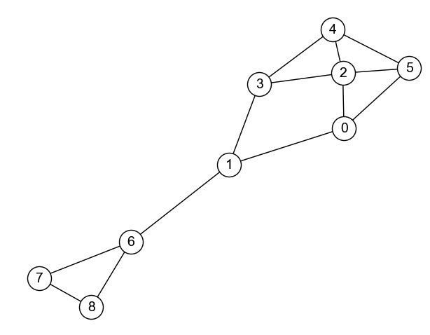

1. グラフデータと経路#
Show code cell source
import numpy as np
import networkx as nx
%matplotlib inline
Show code cell source
DRAW_CONFIG = {
'node_color': 'white',
'edgecolors': 'black', # line color of nodes
'with_labels': True,
'node_size': 600,
'font_size': 14,
'font_family': 'Arial',
}
1.1. グラフとは#
グラフ（graph） とは，以下の図のように「点」と「つながり」によって表されるデータである． 事物間の関係性を抽象化することができる強力なデータ構造である． 分野によっては，グラフのことをネットワークと呼ぶこともある．
数学的には，グラフはノード（node） の集合とエッジ（edge） の集合から構成されるデータを意味する． ノードはグラフを構成する要素であり，頂点と呼ばれることもある． エッジはノード間の連結関係を示すものであり，枝と呼ばれることもある． エッジは重みを持つことがある．
グラフには，
エッジに方向性を有する有向グラフ（directed graph）
エッジに方向性を有しない無向グラフ（undirected graph）
の2種類に大別される．
以下は有向グラフの例．
以下は，上記有向グラフのエッジから方向性を除いた無向グラフ．
1.1.1. NetworkXでグラフを定義する#
NetworkXは，グラフを効率的に扱うためのPythonライブラリである． NetworkXを使うには，以下のようにライブラリをインポートする．
import networkx as nx
さて，上のグラフをNetworkXで定義してみよう． 以下のコードを実行すると，上の有向グラフを定義し可視化できる．
# ノードの集合
V = [0, 1, 2, 3, 4]
# エッジの集合
E = [(0, 1), (1, 0), (1, 2),
(2, 4), (3, 1), (4, 2),
(4, 3)]
G = nx.DiGraph() # 空の有効グラフを用意
G.add_nodes_from(V) # ノードの追加
G.add_edges_from(E) # エッジの追加
# グラフGの可視化
nx.draw(G, with_labels=True)
次は上記グラフを無向グラフ化したものを定義してみよう． 以下がそのコードである．
# ノードの集合
V = [0, 1, 2, 3, 4]
# エッジの集合
E = [(0, 1), (1, 2),
(1, 0), # これを書いても(0, 1)があるので無視される
(2, 4), (3, 1),
(4, 2), # これを書いても(2, 4)があるので無視される
(4, 3)
]
G_undirected = nx.Graph() # 空の無効グラフを用意（DiGraphではない事に注意）
G_undirected.add_nodes_from(V) # ノードの追加
G_undirected.add_edges_from(E) # エッジの追加
# グラフGの可視化
nx.draw(G_undirected, with_labels=True)
定義したグラフのノードとエッジを確認してみよう． 以下のコードでグラフのノード集合とエッジ集合を取得することができる．
# ノードの取得
V = G_undirected.nodes()
# エッジの取得
E = G_undirected.edges()
# エッジを表示してみる
for edge in E:
print(edge)
(0, 1)
(1, 2)
(1, 3)
(2, 4)
(3, 4)
1.1.2. 隣接行列#
グラフにおけるノードの接続関係を示す行列は隣接行列（adjacency matrix） と呼ばれる． 以下のグラフ\(G\)の隣接行列を考えてみよう．
上記グラフ\(G\)の隣接行列\(A\)は，
となる．
NetworkXでグラフ\(G\)の隣接行列\(A\)（numpy.ndarray形式）を取得するには，以下のようにする．
A = nx.adjacency_matrix(G).toarray()
A
array([[0, 1, 0, 0, 0],
[1, 0, 1, 0, 0],
[0, 0, 0, 0, 1],
[0, 1, 0, 0, 0],
[0, 0, 1, 1, 0]])
ちなみに，NetworkXでグラフに属する任意のノードの隣接ノードを取得するにはneighborsメソッドを使う．
以下は，グラフ\(G\)に属するノード1の隣接ノードを取得するコードである．
neighbors = list(G.neighbors(1))
neighbors
[0, 2]
1.2. 経路#
グラフ上のエッジをたどって，あるノードから別ノードに移動する際に通るノードの系列を経路（path） と呼ぶ． 例えば，上記グラフにおいてノード4からノード2に至る経路は\((4, 2), (4, 3, 1, 2)\)などがある．
1.2.1. 到達可能性#
ノード\(n_x\)からノード\(n_y\)への経路が存在するとき，\(n_x\)から\(n_y\)へ到達可能という． 例えば，上記グラフにおいて，ノード0からノード3へは到達可能である． 一方，ノード3からノード0へは到達不可能である．
重みなし行列の場合，隣接行列のべき乗を計算することで到達可能性を調べられる． グラフ\(G\)の隣接行列を\(A\)としたとき，\(A^k\)のm行n列目の値は，m番目のノードからn番目のノードへkホップで到達できる経路がいくつあるかを示す．
例えば，上記グラフ\(G\)の隣接行列\(A\)は
であるが，\(A^2\)は
となる． \(A^2\)において0行2列目の値は1であるが，これは「ノード0からノード2まで2ホップで到達できるノードは1つある」ことを意味している（その経路は\((0, 1, 2)\)）．
隣接行列のべき乗を計算すれば，任意のノードからノードへnホップで到達可能かどうかを調べることができる． これはNetworkXでも簡単にできる． 以下は，上記グラフ\(G\)の到達可能性を調べるコード例である．
# 隣接行列の取得
A = nx.adjacency_matrix(G).toarray()
# Aの2乗を計算
A @ A
array([[0, 0, 1, 0, 0],
[0, 0, 0, 0, 1],
[0, 0, 1, 1, 0],
[0, 0, 1, 0, 0],
[0, 1, 0, 0, 1]])
# Aのn乗の第(i, j)成分の値は，グラフGのノードiからノードjまでnホップで到達できる経路がいくつあるかを示す
np.linalg.matrix_power(A, 3)
array([[0, 0, 0, 0, 1],
[0, 0, 1, 1, 0],
[0, 1, 0, 0, 1],
[0, 0, 0, 0, 1],
[0, 0, 2, 1, 0]])
1.2.2. 距離#
ノード\(n_x\)からノード\(n_y\)への最短経路の長さを距離（distance） と呼ぶ． グラフのエッジに重みがある場合，距離は最短経路上のエッジの重みの合計値となる．
例えば，上記グラフ\(G\)において，ノード4からノード2への最短経路は\((4, 2)\)である． よって，ノード4からノード2への距離は1である．
NetworkXを用いて指定したノード間の最短経路を取得するには，shortest_path関数を用いる．
以下は，上記グラフ\(G\)に属するノード0からノード4への最短経路を取得するコードである．
# sourceは始点，targetは終点
shortest_path = nx.shortest_path(G, source=0, target=4)
shortest_path
[0, 1, 2, 4]
あるノードから他のノードへの最短経路を取得するには，single_source_all_shortest_paths関数を用いる．
以下は，上記グラフ\(G\)に属するノード3から到達できるすべてのノードとそこまでの最短経路を取得するコードである．
# 返り値は dict[node, shortestpath] 形式の辞書（ジェネレータ）
shortest_paths = dict(nx.single_source_all_shortest_paths(G, 3))
# 表示
for node_to, shortest_path in shortest_paths.items():
print(f'ノード{node_to}への最短経路: {shortest_path}')
ノード1への最短経路: [[3, 1]]
ノード2への最短経路: [[3, 1, 2]]
ノード3への最短経路: [[3]]
ノード4への最短経路: [[3, 1, 2, 4]]
NetworkXを用いて，グラフ上の全ノード間の最短経路を取得するには，all_pairs_shortest_pathメソッドを用いる．
以下は，上記グラフ\(G\)に属する全ノード間の最短経路を取得するコードである．
# 返り値は dict[node, shortestpath] 形式の辞書（ジェネレータ）
shortest_paths = dict(nx.all_pairs_shortest_path(G))
# 表示
for node_from, shortest_paths in shortest_paths.items():
for node_to, shortest_path in shortest_paths.items():
print(f'ノード{node_from}からノード{node_to}への最短経路: {shortest_path}')
ノード0からノード0への最短経路: [0]
ノード0からノード1への最短経路: [0, 1]
ノード0からノード2への最短経路: [0, 1, 2]
ノード0からノード4への最短経路: [0, 1, 2, 4]
ノード0からノード3への最短経路: [0, 1, 2, 4, 3]
ノード1からノード1への最短経路: [1]
ノード1からノード2への最短経路: [1, 2]
ノード1からノード4への最短経路: [1, 2, 4]
ノード1からノード3への最短経路: [1, 2, 4, 3]
ノード2からノード2への最短経路: [2]
ノード2からノード4への最短経路: [2, 4]
ノード2からノード3への最短経路: [2, 4, 3]
ノード2からノード1への最短経路: [2, 4, 3, 1]
ノード3からノード3への最短経路: [3]
ノード3からノード1への最短経路: [3, 1]
ノード3からノード2への最短経路: [3, 1, 2]
ノード3からノード4への最短経路: [3, 1, 2, 4]
ノード4からノード4への最短経路: [4]
ノード4からノード2への最短経路: [4, 2]
ノード4からノード3への最短経路: [4, 3]
ノード4からノード1への最短経路: [4, 3, 1]
グラフに属する全ノード間の距離を表記した行列を距離行列（distance matrix） と呼ぶ． 上記グラフ\(G\)の距離行列\(D\)は
となる．
NetworkXを用いて，グラフの距離行列を取得するにはfloyd_warshall_numpyメソッドを用いる．
このメソッドを用いると，距離行列がnumpy.ndarray形式で得られる．
以下は上図のグラフ\(G\)の距離行列を取得するコードである．
# ワーシャルフロイド法による距離行列の算出
nx.floyd_warshall_numpy(G)
array([[ 0., 1., 2., 4., 3.],
[inf, 0., 1., 3., 2.],
[inf, 3., 0., 2., 1.],
[inf, 1., 2., 0., 3.],
[inf, 2., 1., 1., 0.]])
1.3. クイズ#
1.3.1. Q1: グラフの定義#
NetworkXを使って以下のグラフを定義し，可視化しなさい．

1.3.2. Q2: 到達可能性#
Q1で定義したグラフについて，ノード4からノード6に4ホップで到達できる経路はいくつあるかを求めなさい．
1.3.3. Q3: ソーシャルグラフ#
SNAP Facebook Datasetは，スタンフォード大学のソーシャルネットワーク分析プロジェクトが公開しているデータセットの一つである． このデータセットにはFacebookから抽出したユーザ間のつながり（フレンド関係）が格納されている．
以下のコードは，データセットを読み込み，NetworkXのグラフ形式に変換し，グラフを可視化するコードである．
読み込んだグラフ（G_facebook）に対して最短経路アルゴリズムを適用し，グラフ上の全ノード間の距離を計算しなさい．
その上で，計算したノード間の距離の平均値を求めなさい．
import pandas as pd
import networkx as nx
# データのダウンロード via pandas
facebook_df = pd.read_csv(
"https://snap.stanford.edu/data/facebook_combined.txt.gz",
compression="gzip",
sep=" ",
names=["start_node", "end_node"],
)
# NetworkXのグラフに変換
G_facebook = nx.from_pandas_edgelist(facebook_df, "start_node", "end_node")
# 表示位置を調整して可視化
pos = nx.spring_layout(G_facebook, iterations=15, seed=1721)
nx.draw(G_facebook, pos, node_size=10, with_labels=False, width=0.15, alpha=0.5)